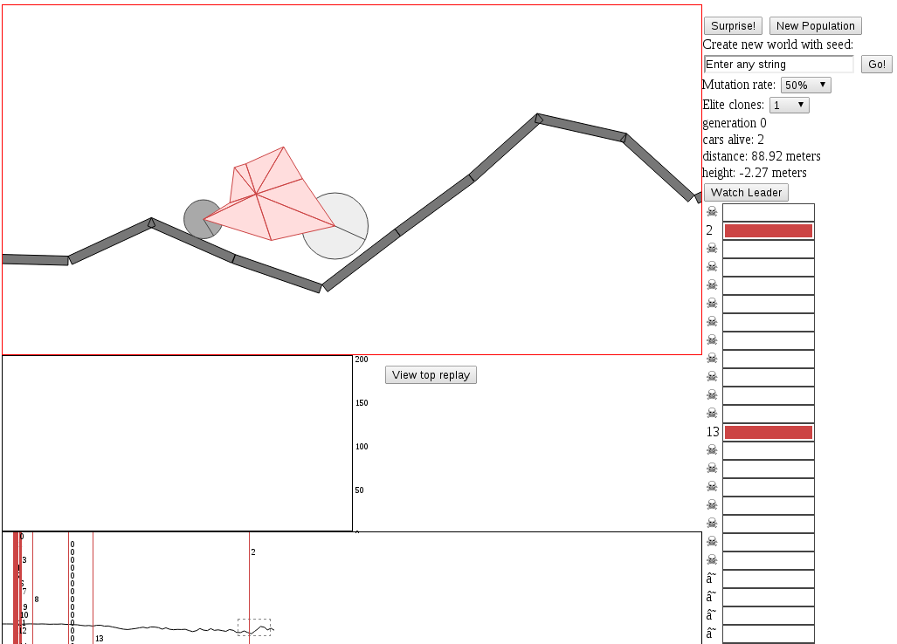
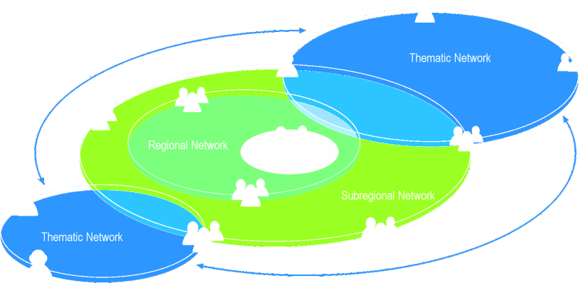
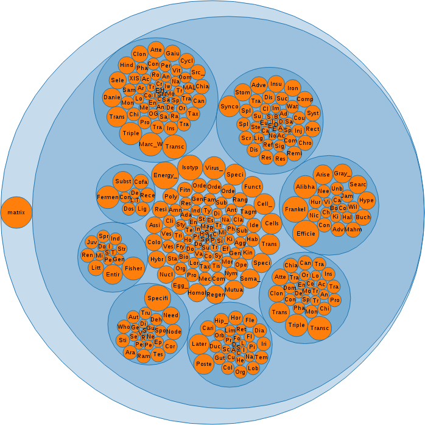
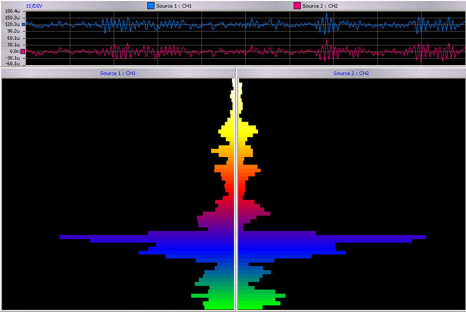

Singularity

The "ethics of artificial intelligence" is the part of the ethics of technology specific to robots and other artificially intelligent beings. It is typically divided into roboethics, a concern with the moral behavior of humans as they design, construct, use and treat artificially intelligent beings, and machine ethics, concern with the moral behavior of artificial moral agents (AMAs).
 Recursive self improvement is the ability of strong artificial intelligence to program its own software, recursively. This is sometimes also referred to as Seed AI because if an AI was created such that its engineering capabilities matched or surpassed those of its human creators, it would have the potential to autonomously improve the design of its constituent software and hardware. Having undergone these improvements, it would then be better able to find ways of optimizing its structure and improving its abilities further. It is speculated that over many iterations, such an AI would far surpass human cognitive abilities. The successful implementation of seed AI would result in a technological singularity.
Strong AI is hypothetical artificial intelligence that matches or exceeds human intelligence, Strong AI is associated with traits such as consciousness, sentience, sapience and self-awareness observed in living beings.
Weak AI,an artificial intelligence system which is not intended to match or exceed the capabilities of human beings
A Friendly Artificial Intelligence or FAI is an artificial intelligence (AI) that has a positive rather than negative effect on humanity.
Artificial intuition is the capacity of an artificial object or software to function with intuition, or a machine-based system that has some capacity to function analogous to the human intuition.
Artificial imagination (AIm), also called Synthetic imagination or machine imagination is defined as artificial simulation of human imagination by general or special purpose computers or artificial neural networks. The term artificial imagination is also used to describe a property of machines or programs: Among some of the traits that researchers hope to simulate using machines include creativity, vision, digital art, humor, satire, etc. Artificial imagination research uses tools and insights from many fields, including computer science, Rhetoric, psychology, creative arts, philosophy, neuroscience, affective computing, Artificial Intelligence, Artificial intuition, cognitive science, linguistics, operations research, creative writing, probability and logic. The various practitioners in the field are researching various aspects of Artificial imagination, such as Artificial (visual) imagination, Visual Information Retrieval Using Synthesized Imagery


